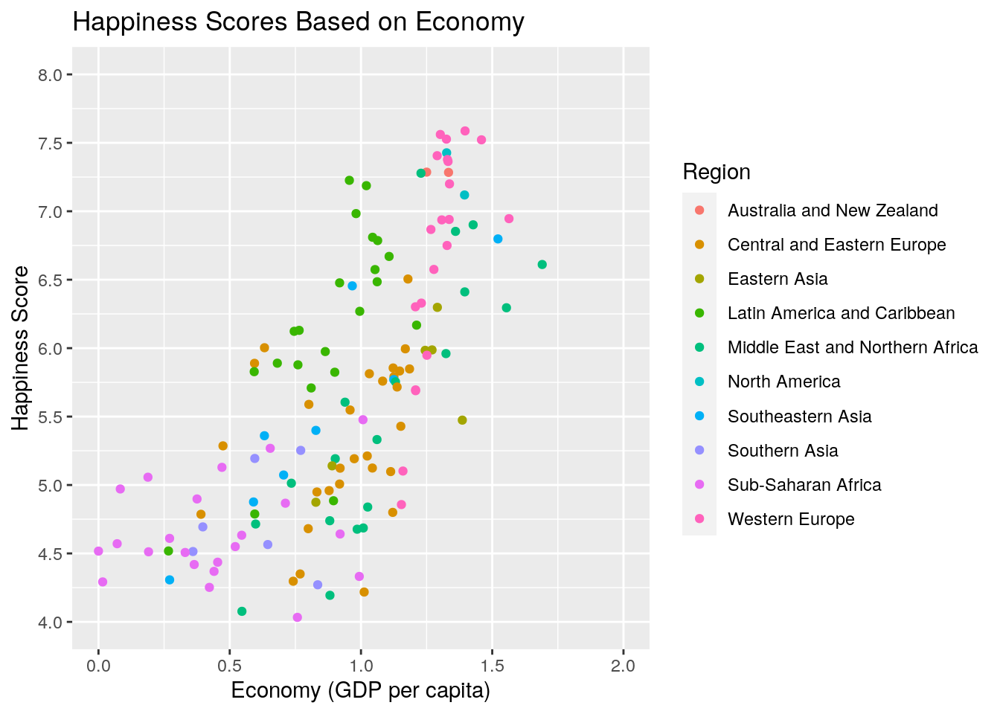
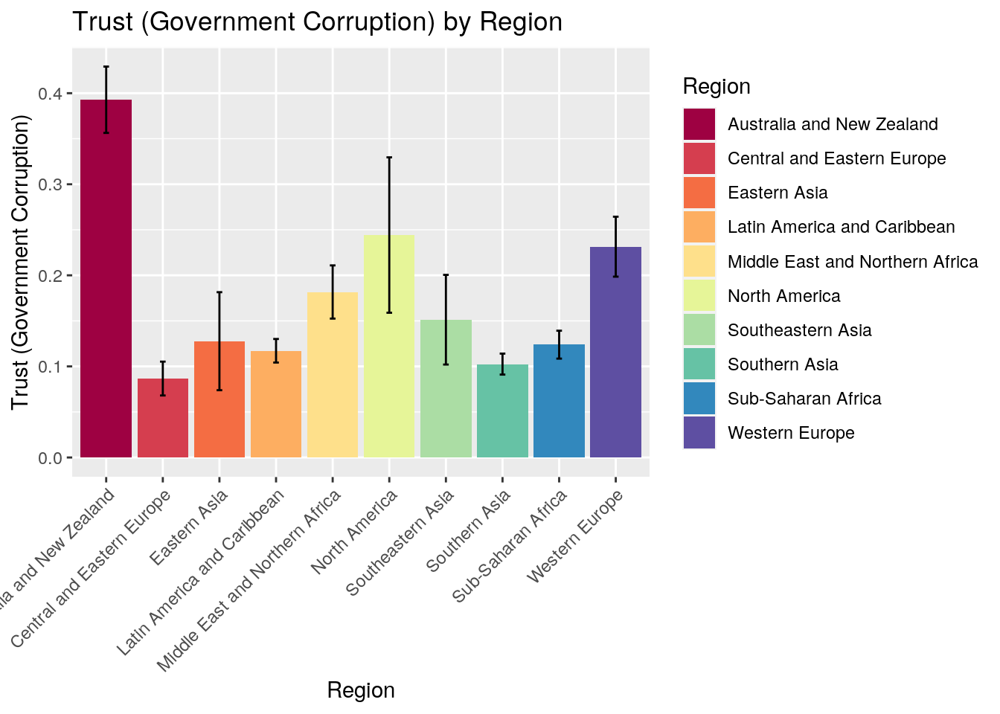
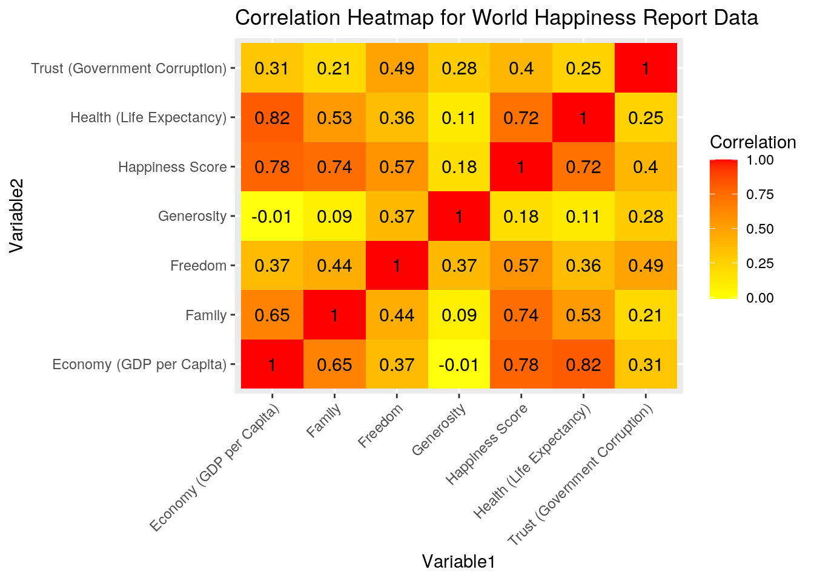
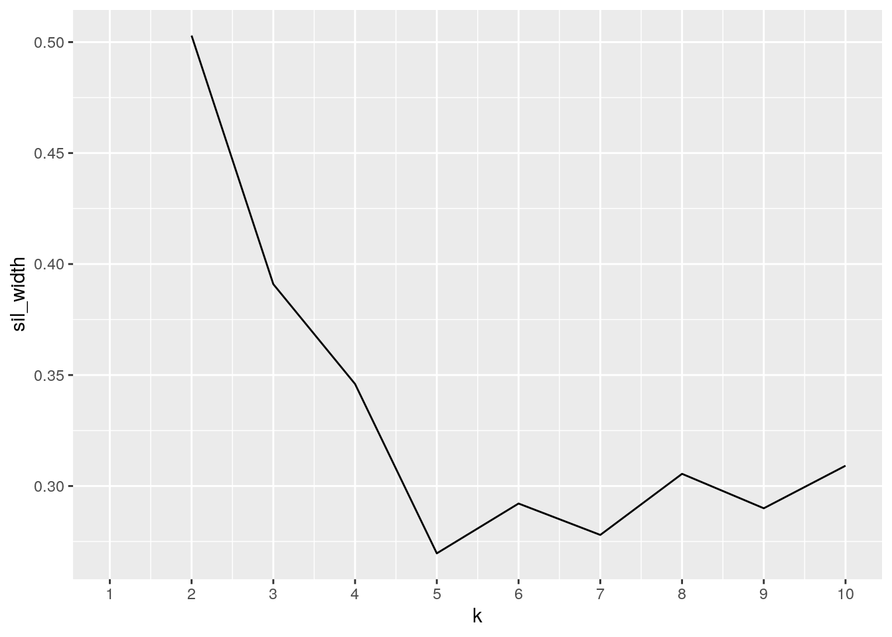
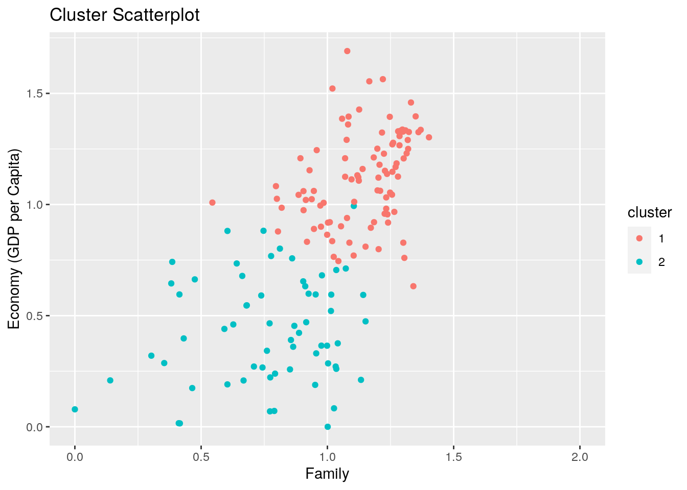
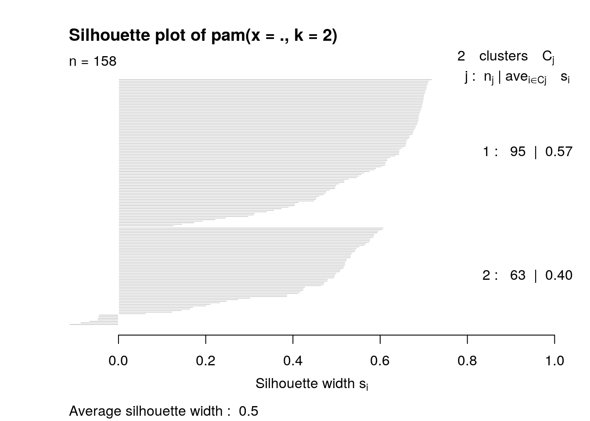

My chosen dataset yields from the World Happiness Report of 2015 as found on Kaggle. The World Happiness Report is used by experts in a variety of fields to look at how well being can be evaluated as a measure to analyze the progress of countries. The original variables included in this specific dataset are: Country, Region, Happiness Rank, Happiness Score, Standard Error, Economy (GDP per Capita), Family, Health (Life Expectancy), Trust (Government Corruption), Generosity, and Dystopia Residual. I removed the last variable, Dystopia Residal, as residuals were described to have "no impact on the total score reported for each country." Further, the residual is an unexplained component that varies for each respective country and mirrors the "extent to which the [other seven] variables either over- or under-explain average" life contentment evaluations. I did not see a way in which the Dystopia Residual data could be well compared to the other variables in this study and hence removed it from and overwrote the original dataset to have 11 variables left to analyze. The variables of Happiness Rank and Happiness Score were created using data from the Gallup World Poll. The Happiness Scores were calculated based on responses to main life evaluation questions asked in the Gallup World Poll using the Cantril ladder, which asks those taking the poll to conceptualize a ladder and score their current value of living with the worst possible life considered a 0 and the best possible life considered a 10. The variables that follow the Happiness Score in the dataset "estimate the extent to which each of [these six] factors ...contribute to making life evaluations higher in each country." The six factors include: Economy (GDP per Capita), Family, Health (Life Expectancy), Freedom, Trust (Government Corruption), and Generosity.
I was drawn to this dataset as I have become increasingly interested in learning about the contentment of other world citizens in regard to their respective resident countries as many of the classes I am in this semester discuss topics such as trust in the government, GDP, and health. I wanted to see how and if variables like these translated to resident contentment and to see if there were any regions that were prevalent on different ends of the spectrum. I opine that regions higher in Economy (GDP Per Capita) and will have higher/better Happiness Scores.
library(tidyverse)
library(dplyr)
library(ggplot2)
Happiness <- read_csv("HappinessData.csv")
glimpse(Happiness)## Rows: 158
## Columns: 12
## $ Country <chr> "Switzerland", "Iceland", "Denmark", …
## $ Region <chr> "Western Europe", "Western Europe", "…
## $ `Happiness Rank` <dbl> 1, 2, 3, 4, 5, 6, 7, 8, 9, 10, 11, 12…
## $ `Happiness Score` <dbl> 7.587, 7.561, 7.527, 7.522, 7.427, 7.…
## $ `Standard Error` <dbl> 0.03411, 0.04884, 0.03328, 0.03880, 0…
## $ `Economy (GDP per Capita)` <dbl> 1.39651, 1.30232, 1.32548, 1.45900, 1…
## $ Family <dbl> 1.34951, 1.40223, 1.36058, 1.33095, 1…
## $ `Health (Life Expectancy)` <dbl> 0.94143, 0.94784, 0.87464, 0.88521, 0…
## $ Freedom <dbl> 0.66557, 0.62877, 0.64938, 0.66973, 0…
## $ `Trust (Government Corruption)` <dbl> 0.41978, 0.14145, 0.48357, 0.36503, 0…
## $ Generosity <dbl> 0.29678, 0.43630, 0.34139, 0.34699, 0…
## $ `Dystopia Residual` <dbl> 2.51738, 2.70201, 2.49204, 2.46531, 2…Happiness <- Happiness[-12]Happiness_Untidy <- Happiness %>% pivot_longer(c("Family", "Freedom",
"Generosity"), names_to = "Social Based Measures", values_to = "Value")
glimpse(Happiness_Untidy)## Rows: 474
## Columns: 10
## $ Country <chr> "Switzerland", "Switzerland", "Switze…
## $ Region <chr> "Western Europe", "Western Europe", "…
## $ `Happiness Rank` <dbl> 1, 1, 1, 2, 2, 2, 3, 3, 3, 4, 4, 4, 5…
## $ `Happiness Score` <dbl> 7.587, 7.587, 7.587, 7.561, 7.561, 7.…
## $ `Standard Error` <dbl> 0.03411, 0.03411, 0.03411, 0.04884, 0…
## $ `Economy (GDP per Capita)` <dbl> 1.39651, 1.39651, 1.39651, 1.30232, 1…
## $ `Health (Life Expectancy)` <dbl> 0.94143, 0.94143, 0.94143, 0.94784, 0…
## $ `Trust (Government Corruption)` <dbl> 0.41978, 0.41978, 0.41978, 0.14145, 0…
## $ `Social Based Measures` <chr> "Family", "Freedom", "Generosity", "F…
## $ Value <dbl> 1.34951, 0.66557, 0.29678, 1.40223, 0…Happiness_Tidy <- Happiness_Untidy %>% pivot_wider(names_from = "Social Based Measures",
values_from = "Value")
glimpse(Happiness_Tidy)## Rows: 158
## Columns: 11
## $ Country <chr> "Switzerland", "Iceland", "Denmark", …
## $ Region <chr> "Western Europe", "Western Europe", "…
## $ `Happiness Rank` <dbl> 1, 2, 3, 4, 5, 6, 7, 8, 9, 10, 11, 12…
## $ `Happiness Score` <dbl> 7.587, 7.561, 7.527, 7.522, 7.427, 7.…
## $ `Standard Error` <dbl> 0.03411, 0.04884, 0.03328, 0.03880, 0…
## $ `Economy (GDP per Capita)` <dbl> 1.39651, 1.30232, 1.32548, 1.45900, 1…
## $ `Health (Life Expectancy)` <dbl> 0.94143, 0.94784, 0.87464, 0.88521, 0…
## $ `Trust (Government Corruption)` <dbl> 0.41978, 0.14145, 0.48357, 0.36503, 0…
## $ Family <dbl> 1.34951, 1.40223, 1.36058, 1.33095, 1…
## $ Freedom <dbl> 0.66557, 0.62877, 0.64938, 0.66973, 0…
## $ Generosity <dbl> 0.29678, 0.43630, 0.34139, 0.34699, 0…Here, I used the function pivot_longer to create a column named "Social Based Measures" using the variables Family, Freedom, and Generosity, creating a chr (character) variable. I took the values of these three variables and created an additional column that assigned their respecitve values to each variable in the "Social Based Measure" column. In doing so, I made the original Happiness dataset, which was tidy, untidy. To retidy the data, I used pivot_wider to return the untidy dataset to a format in which the three variables of Family, Freedom, and Generosity were returned to their original column form with their respective values for each of the 158 countries included in this dataset. In tidying the data, I used the function pivot_wider to reshape the dataset so that every observation has its own row and every variable its own column.
Happiness %>% summarize_all(function(x) sum(is.na(x)))## # A tibble: 1 x 11
## Country Region `Happiness Rank` `Happiness Scor… `Standard Error`
## <int> <int> <int> <int> <int>
## 1 0 0 0 0 0
## # … with 6 more variables: `Economy (GDP per Capita)` <int>, Family <int>,
## # `Health (Life Expectancy)` <int>, Freedom <int>, `Trust (Government
## # Corruption)` <int>, Generosity <int>datasetpart1 <- Happiness %>% select("Country", 2:6)
datasetpart2 <- Happiness %>% select("Country", 7:11)
glimpse(datasetpart1)## Rows: 158
## Columns: 6
## $ Country <chr> "Switzerland", "Iceland", "Denmark", "Norw…
## $ Region <chr> "Western Europe", "Western Europe", "Weste…
## $ `Happiness Rank` <dbl> 1, 2, 3, 4, 5, 6, 7, 8, 9, 10, 11, 12, 13,…
## $ `Happiness Score` <dbl> 7.587, 7.561, 7.527, 7.522, 7.427, 7.406, …
## $ `Standard Error` <dbl> 0.03411, 0.04884, 0.03328, 0.03880, 0.0355…
## $ `Economy (GDP per Capita)` <dbl> 1.39651, 1.30232, 1.32548, 1.45900, 1.3262…glimpse(datasetpart2)## Rows: 158
## Columns: 6
## $ Country <chr> "Switzerland", "Iceland", "Denmark", …
## $ Family <dbl> 1.34951, 1.40223, 1.36058, 1.33095, 1…
## $ `Health (Life Expectancy)` <dbl> 0.94143, 0.94784, 0.87464, 0.88521, 0…
## $ Freedom <dbl> 0.66557, 0.62877, 0.64938, 0.66973, 0…
## $ `Trust (Government Corruption)` <dbl> 0.41978, 0.14145, 0.48357, 0.36503, 0…
## $ Generosity <dbl> 0.29678, 0.43630, 0.34139, 0.34699, 0…fulldataset <- full_join(datasetpart1, datasetpart2, by = "Country")
glimpse(fulldataset)## Rows: 158
## Columns: 11
## $ Country <chr> "Switzerland", "Iceland", "Denmark", …
## $ Region <chr> "Western Europe", "Western Europe", "…
## $ `Happiness Rank` <dbl> 1, 2, 3, 4, 5, 6, 7, 8, 9, 10, 11, 12…
## $ `Happiness Score` <dbl> 7.587, 7.561, 7.527, 7.522, 7.427, 7.…
## $ `Standard Error` <dbl> 0.03411, 0.04884, 0.03328, 0.03880, 0…
## $ `Economy (GDP per Capita)` <dbl> 1.39651, 1.30232, 1.32548, 1.45900, 1…
## $ Family <dbl> 1.34951, 1.40223, 1.36058, 1.33095, 1…
## $ `Health (Life Expectancy)` <dbl> 0.94143, 0.94784, 0.87464, 0.88521, 0…
## $ Freedom <dbl> 0.66557, 0.62877, 0.64938, 0.66973, 0…
## $ `Trust (Government Corruption)` <dbl> 0.41978, 0.14145, 0.48357, 0.36503, 0…
## $ Generosity <dbl> 0.29678, 0.43630, 0.34139, 0.34699, 0…In this section I divided my complete dataset (Happiness) into two smaller datasets named datasetpart1 and datasetpart2 respectively with the common ID variable of Country. I used a full_join() here to combine/join the smaller datasets back together by the common ID variable of Country. I knew that there were no observations missing as I checked for missing/NA values in the full Happiness dataset prior to splitting it in two. From this we know that each Country was assigned a region and had a value recorded for the variables Happiness Rank, Happiness Score, Standard Error, Economy (GDP per Capita), Family, Health (Life Expectancy), Freedom, Trust (Government Corruption), and Generosity. I used a full_join because it keeps all of the rows from both of the datasets that I created and inserts an NA where there is missing information. I knew, however, as mentioned before that there would be no concern with NAs in joining these datasets as there was no missing information present in either. Further, we can conclude from this that there were no cases dropped when using the full_join to join datasetpart1 and datasetpart2. Using a full join yielded a full dataset (labeled "fulldataset") that contained as much information as possible from each Country. Lastly, there were 158 observations in each column in datasetpart1, datasetpart2, and fulldataset. Datasetpart1 had 6 columns, datasetpart2 had 6 columns, and the joined dataset (fulldataset) had 11 columns.
Happiness %>% summarize_if(is.numeric, c(mean = mean, min = min,
max = max, n_distinct = n_distinct)) %>% pivot_longer(contains("_"))## # A tibble: 36 x 2
## name value
## <chr> <dbl>
## 1 Happiness Rank_mean 79.5
## 2 Happiness Score_mean 5.38
## 3 Standard Error_mean 0.0479
## 4 Economy (GDP per Capita)_mean 0.846
## 5 Family_mean 0.991
## 6 Health (Life Expectancy)_mean 0.630
## 7 Freedom_mean 0.429
## 8 Trust (Government Corruption)_mean 0.143
## 9 Generosity_mean 0.237
## 10 Happiness Rank_min 1
## # … with 26 more rowsHappiness %>% group_by(Region) %>% summarize_if(is.numeric, c(mean = mean,
sd = sd, min = min, max = max, n_distinct = n_distinct)) %>%
pivot_longer(contains("_"))## # A tibble: 450 x 3
## Region name value
## <chr> <chr> <dbl>
## 1 Australia and New Zealand Happiness Rank_mean 9.5
## 2 Australia and New Zealand Happiness Score_mean 7.28
## 3 Australia and New Zealand Standard Error_mean 0.0373
## 4 Australia and New Zealand Economy (GDP per Capita)_mean 1.29
## 5 Australia and New Zealand Family_mean 1.31
## 6 Australia and New Zealand Health (Life Expectancy)_mean 0.920
## 7 Australia and New Zealand Freedom_mean 0.645
## 8 Australia and New Zealand Trust (Government Corruption)_mean 0.393
## 9 Australia and New Zealand Generosity_mean 0.455
## 10 Australia and New Zealand Happiness Rank_sd 0.707
## # … with 440 more rowsmedian(Happiness$`Happiness Score`)## [1] 5.2325Happiness %>% mutate(Grouping.Var = ifelse(`Happiness Score` >
5.2325, "High", "Low")) %>% group_by(Grouping.Var) %>% summarize_if(is.numeric,
c(mean = mean, sd = sd, min = min, max = max, n_distinct = n_distinct))## # A tibble: 2 x 46
## Grouping.Var `Happiness Rank… `Happiness Scor… `Standard Error…
## <chr> <dbl> <dbl> <dbl>
## 1 High 40 6.33 0.0454
## 2 Low 119. 4.42 0.0504
## # … with 42 more variables: `Economy (GDP per Capita)_mean` <dbl>,
## # Family_mean <dbl>, `Health (Life Expectancy)_mean` <dbl>,
## # Freedom_mean <dbl>, `Trust (Government Corruption)_mean` <dbl>,
## # Generosity_mean <dbl>, `Happiness Rank_sd` <dbl>, `Happiness
## # Score_sd` <dbl>, `Standard Error_sd` <dbl>, `Economy (GDP per
## # Capita)_sd` <dbl>, Family_sd <dbl>, `Health (Life Expectancy)_sd` <dbl>,
## # Freedom_sd <dbl>, `Trust (Government Corruption)_sd` <dbl>,
## # Generosity_sd <dbl>, `Happiness Rank_min` <dbl>, `Happiness
## # Score_min` <dbl>, `Standard Error_min` <dbl>, `Economy (GDP per
## # Capita)_min` <dbl>, Family_min <dbl>, `Health (Life Expectancy)_min` <dbl>,
## # Freedom_min <dbl>, `Trust (Government Corruption)_min` <dbl>,
## # Generosity_min <dbl>, `Happiness Rank_max` <dbl>, `Happiness
## # Score_max` <dbl>, `Standard Error_max` <dbl>, `Economy (GDP per
## # Capita)_max` <dbl>, Family_max <dbl>, `Health (Life Expectancy)_max` <dbl>,
## # Freedom_max <dbl>, `Trust (Government Corruption)_max` <dbl>,
## # Generosity_max <dbl>, `Happiness Rank_n_distinct` <int>, `Happiness
## # Score_n_distinct` <int>, `Standard Error_n_distinct` <int>, `Economy (GDP
## # per Capita)_n_distinct` <int>, Family_n_distinct <int>, `Health (Life
## # Expectancy)_n_distinct` <int>, Freedom_n_distinct <int>, `Trust (Government
## # Corruption)_n_distinct` <int>, Generosity_n_distinct <int>Happiness %>% filter(Region == "Sub-Saharan Africa") %>% arrange("Happiness.Rank)",
desc())## # A tibble: 40 x 11
## Country Region `Happiness Rank` `Happiness Scor… `Standard Error`
## <chr> <chr> <dbl> <dbl> <dbl>
## 1 Maurit… Sub-S… 71 5.48 0.0720
## 2 Nigeria Sub-S… 78 5.27 0.0419
## 3 Zambia Sub-S… 85 5.13 0.0699
## 4 Somali… Sub-S… 91 5.06 0.0616
## 5 Mozamb… Sub-S… 94 4.97 0.0790
## 6 Lesotho Sub-S… 97 4.90 0.0944
## 7 Swazil… Sub-S… 101 4.87 0.0874
## 8 South … Sub-S… 113 4.64 0.0458
## 9 Ghana Sub-S… 114 4.63 0.0474
## 10 Zimbab… Sub-S… 115 4.61 0.0429
## # … with 30 more rows, and 6 more variables: `Economy (GDP per Capita)` <dbl>,
## # Family <dbl>, `Health (Life Expectancy)` <dbl>, Freedom <dbl>, `Trust
## # (Government Corruption)` <dbl>, Generosity <dbl>Happiness %>% filter(Region == "Australia and New Zealand") %>%
arrange("Happiness.Rank", desc())## # A tibble: 2 x 11
## Country Region `Happiness Rank` `Happiness Scor… `Standard Error`
## <chr> <chr> <dbl> <dbl> <dbl>
## 1 New Ze… Austr… 9 7.29 0.0337
## 2 Austra… Austr… 10 7.28 0.0408
## # … with 6 more variables: `Economy (GDP per Capita)` <dbl>, Family <dbl>,
## # `Health (Life Expectancy)` <dbl>, Freedom <dbl>, `Trust (Government
## # Corruption)` <dbl>, Generosity <dbl>In this section I began wrangling by using the summarize_if function to create summary statistics for my numeric variables before grouping. In doing so I used the summary statistics of mean, minimum, maximum, and n_distinct. I followed this by using pivot_longer to organize the table. I then grouped the data by the variable of Region and used the same summary statistics of mean, minimum, maximum, and n_distinct on each of the numeric variables. I again used pivot_longer to organize this table of data. I was intrigued by the variable of Happiness Score and wanted to further explore this variable. I found the median Happiness Score of the variable's observations and used the mutate function along with ifelse to dichotomize a numeric variable to create a categorical variable of high and low Happiness Scores in a new variable named Grouping.Var. The “high” group contained values above the median Happiness Score while the “low” group contained values below the median Happiness Score. After this, I ran summary statistics of mean, minimum, maximum, and n_distinctonce again. In doing so I noted that the variables that showed the greatest differences in scores between the high and low groups were average Economy (GDP per capita), Family, Health, and Freedom.
When looking at the results of the above analyses I noticed that the region of Australia and New Zealand had the highest mean happiness scores, while countries from the region of Sub-Saharan Africa had the lowest mean happiness scores. To look further into this I filtered the dataset at large by each of these regions respectively and arranged them based on happiness rank in descending order. Another interesting observation was that there were 40 countries in the Sub-Saharan Africa region, and 34 of those 40 countries fell in the lowest third of countries based on happiness rank. In other words out of the 40 countries in this dataset from Sub-Saharan Africa, there were 36 countries that fell between the 100-158 ranks in the Happiness Rank variable.
ggplot(Happiness, aes(x = `Economy (GDP per Capita)`, y = `Happiness Score`,
color = Region)) + geom_point() + scale_x_continuous(lim = c(0,
2), breaks = seq(0, 2, 0.5)) + scale_y_continuous(lim = c(4,
8), breaks = seq(4, 8, 0.5)) + labs(x = "Economy (GDP per capita)",
y = "Happiness Score") + ggtitle("Happiness Scores Based on Economy") +
theme_gray() I created this plot -- "Happiness Scores Based on Economy" to see if there was a relationship between the Economy (GDP per capita) of a country and its Happiness Score. I further colored the points by their respective regions to see if there were any groups or patterns observed in this graph. There appears to be a fairly positive correlation because Economy (GDP per capita) scores and Happiness Score as seen through this graph. As the Economy (GDP per capita) increases the Happiness Score increases. Further, we see that the countries in the region of Australia and New Zealand have some of the highest Economy (GDP per capita) scores and Happiness Scores. The countries of the region of Sub-Saharan Africa, on the other hand, generally present the lowest Economy (GDP per capita) scores and Happiness Score. An interesting observation is that while a number of Western European countries fall on the high end of the Economy (GDP per capita) variable range and Happiness Score variable range, there are a few outliers in this region that have similar Economy (GDP per capita) scores to the Western European countries with high Happiness Scores but in turn have mid range to lower Happiness Scores. The same trend follows for Middle Eastern countries that vary largely across the Economy (GDP per capita) range as well as the Happiness Score range.
ggplot(Happiness, aes(Region, `Trust (Government Corruption)`,
fill = Region)) + geom_bar(stat = "summary", fun = mean) +
geom_errorbar(stat = "summary", aes(width = 0.1)) + labs(y = "Trust (Government Corruption)") +
ggtitle("Trust (Government Corruption) by Region") + scale_fill_brewer(palette = "Spectral") +
theme(axis.text.x = element_text(angle = 45, hjust = 1))
For this plot, I looked at the average Trust (Government Corruption) scores of the countries in the Happiness dataset by region. Based on the addition of error bars, observations about the significance of differences between the Trust (Government Corruption) scores can be made. The following observations are made based on the following logic: when the error bars of the two regions in comparison do not overlap, there is a signficiant difference between the Trust (Government Corruption) scores of these two regions. The region with the highest average Trust (Government Corruption) score is Australia and New Zealand which has an average Trust (Government Corruption) score that is significantly different from the average scores of all other regions in this dataset. The two regions with the second and third highest average Trust (Government Corruption) scores are North America and Western Europe respectively. The average Trust (Government Corruption) scores of these two regions do not significantly differ from one another. Lastly looking at the regions with the lowest average Trust (Government Corruption) scores (Central and Eastern Europe and Southern Asia), the average Trust (Government Corruption) scores of these two regions do not significantly differ from one another either. From this analysis it was interesting to see that the two regions that had the highest Economy (GDP per capita) scores (Western Europe and Australia and New Zealand) had some of the highest average Trust (Government Corruption) scores as well. This observation, however, does not hold well for the regions with the lowest Economy (GDP per capita) scores. I am interested and excited to look at the correlation values of these two variables in the following heatmap to determine if there is a strong correlation between the two.
Happiness %>% select_if(is.numeric) %>% select(`Happiness Score`,
`Economy (GDP per Capita)`, Family, `Health (Life Expectancy)`,
Freedom, `Trust (Government Corruption)`, Generosity) %>%
cor %>% as.data.frame %>% rownames_to_column("Variable1") %>%
pivot_longer(-1, names_to = "Variable2", values_to = "Correlation") %>%
ggplot(aes(Variable1, Variable2, fill = Correlation)) + geom_tile() +
scale_fill_gradient2(low = "white", mid = "yellow", high = "red") +
geom_text(aes(label = round(Correlation, 2)), color = "black",
size = 4) + theme(axis.text.x = element_text(angle = 45,
hjust = 1)) + ggtitle("Correlation Heatmap for World Happiness Report Data")
As per my previous interest in the relationship between the variables Economy (GDP per capita) and Trust (Government Corruption), there infact is a low strength of correlation between these two variables with a correlation value of 0.31. On the other hand, the relationship between the variables of Economy (GDP per capita) and Health (Life Expectancy) have a strong correlation value of 0.82, as does the Economy (GDP per capita) variable with Happiness Scores with a correlation value of 0.78. Another notably strong correlation is seen between the variables of Happiness Score and Family with a correlation value of 0.74. Contrastly, the variables of Generosity and Economy (GDP per capita) have the weakest correlation of any combination of variables in the heatmap at a value of -0.01. Additionally, the variable of Generosity has a weak correlation with the variable of Family resulting in a correlation value of 0.09. Further, it can be seen in the heatmap above that the variable of Generosity at large has very weak correlations with all other numeric variables in the Happiness dataset. The variable of Trust (Government Corruption) also has fairly weak correlations with the other numeric variables, but not to the extent that the variable of Generosity does.
library(cluster)
pam_data <- Happiness %>% select(Family, `Health (Life Expectancy)`,
`Economy (GDP per Capita)`)
sil_width <- vector()
for (i in 2:10) {
pam_fits <- pam(pam_data, k = i)
sil_width[i] <- pam_fits$silinfo$avg.width
}
ggplot() + geom_line(aes(x = 1:10, y = sil_width)) + scale_x_continuous(name = "k",
breaks = 1:10)
pam1 <- Happiness %>% select(Family, `Health (Life Expectancy)`,
`Economy (GDP per Capita)`) %>% pam(k = 2)
pam1## Medoids:
## ID Family Health (Life Expectancy) Economy (GDP per Capita)
## [1,] 104 1.20215 0.75905 1.12094
## [2,] 124 0.86908 0.35874 0.45407
## Clustering vector:
## [1] 1 1 1 1 1 1 1 1 1 1 1 1 1 1 1 1 1 1 1 1 1 1 1 1 1 1 1 1 1 1 1 1 1 1 1 1 1
## [38] 1 1 1 1 1 1 1 1 1 1 1 1 1 2 2 1 1 1 1 2 1 1 1 1 1 1 1 1 1 1 1 2 1 1 1 1 1
## [75] 2 1 2 2 1 1 2 1 1 1 2 1 1 1 1 2 2 2 1 2 1 1 2 1 2 1
## [ reached getOption("max.print") -- omitted 58 entries ]
## Objective function:
## build swap
## 0.3450613 0.3168064
##
## Available components:
## [1] "medoids" "id.med" "clustering" "objective" "isolation"
## [6] "clusinfo" "silinfo" "diss" "call" "data"HappinessFinal <- Happiness %>% mutate(cluster = as.factor(pam1$clustering))
ggplot(HappinessFinal, aes(x = Family, y = `Economy (GDP per Capita)`,
color = cluster)) + geom_point() + scale_x_continuous(lim = c(0,
2)) + ggtitle("Cluster Scatterplot")
HappinessFinal %>% group_by(cluster) %>% summarize_if(is.numeric,
mean, na.rm = T)## # A tibble: 2 x 10
## cluster `Happiness Rank` `Happiness Scor… `Standard Error` `Economy (GDP p…
## <fct> <dbl> <dbl> <dbl> <dbl>
## 1 1 52.9 6.02 0.0462 1.12
## 2 2 120. 4.40 0.0504 0.435
## # … with 5 more variables: Family <dbl>, `Health (Life Expectancy)` <dbl>,
## # Freedom <dbl>, `Trust (Government Corruption)` <dbl>, Generosity <dbl>Happiness %>% slice(pam1$id.med)## # A tibble: 2 x 11
## Country Region `Happiness Rank` `Happiness Scor… `Standard Error`
## <chr> <chr> <dbl> <dbl> <dbl>
## 1 Hungary Centr… 104 4.8 0.0611
## 2 Maurit… Sub-S… 124 4.44 0.0395
## # … with 6 more variables: `Economy (GDP per Capita)` <dbl>, Family <dbl>,
## # `Health (Life Expectancy)` <dbl>, Freedom <dbl>, `Trust (Government
## # Corruption)` <dbl>, Generosity <dbl>pam1$silinfo$avg.width## [1] 0.5029267plot(pam1, which = 2)
For my cluster analysis, I used PAM and clustered the following numeric variables from the Happiness dataset: Family, Health (Life Expectancy), and Economy (GDP per Capita). I chose these variables based on the additional analysis conduced with the correlation heatmap. I initially wanted to use the variables that I grouped together when previously untidying my data into a column named "Social Based Measures"; however, the Generosity variable did not seem to be strong for comparative analysis. After deciding on these three numeric variables I determined the number of clusters I was going to use with the help of a silhouette plot. In the silhouette plot, as can be seen above, the highest point in the plot was at the k value of 2. Hence, this is the number of clusters that I used in PAM. The cluster scatterplot that I created showed some interesting results. Here we have two clusters that are somewhat distinct but have some overlap near the Family score and Economy (GDP per capita) score values of 0.75-1. When completing this analysis it would be ideal to have two distinct clusters that vary from one another, and have little variation within their respective clusters. In the cluster scatterplot above we have two clusters that are neither tightly compact as clusters nor clearly distinct from one another as there is overlap as previously mentioned. Interestly, after looking at the cluster scatterplot I computed the average silhoette width. Doing so yielded a value of approximately 0.5, which indicates that the structure is weak and could be artificial. This conclusion aligns and is in accord with the conclusions previously made when analyzing the the visual representation seen in the cluster scatterplot. A score of 0.5, however, is just on the border of being an average silhouette width that indicates that a reasonable structure has been found (0.51-0.70). This seems logical because the cluster scatterplot is fairly ambiguous in terms of firmly concluding that there is an overlapp between the two clusters and if the clusters are distinct enough to indicate a reasonable structure.